감리단은 구조적 안정성 확보와 비용 효율의 관점에서 철거 후 신축 의견을 제시하였다. 그러나 이 건물은 현존 사례가 많지 않은 1950년대 후반의 교육·건축·생활문화를 오늘에 전하는 물적 자료로서, 단순한 구조 성능이나 유지관리 비용만으로 존치 여부를 판단하기 어렵다. 이 건물은 전후 교육 재건의 흐름, 양식주의에서 모더니즘으로 이행하는 대학 건축의 변화, 자기주도적 탐구 중심 학습 환경의 도입, 그리고 1950년대 생활 조건에 대한 건축적 대응을 함께 보여주는 복합적 유산이다. 아울러 이 건물은 서울대학교와 서울사대부고의 기억이 중첩된 장소이며, 이를 보존·리노베이션하고자 하는 건축주의 의사 역시 검토 과정에서 중요하게 고려될 필요가 있다. 따라서 본 건물은 철거 여부를 서둘러 결정하기보다, 역사적 가치 평가를 선행한 뒤 보존 및 활용 가능성을 우선 검토할 필요가 있다.
1사회사적 의의국제 원조에 기반한 전후 교육 재건의 물적 흔적
이 건물은 한국전쟁 휴전 이후 본격화된 국제 원조 기반 교육 재건의 흐름 속에서 이해될 필요가 있다. UNKRA(United Nations Korean Reconstruction Agency)는 1953년부터 1958년까지 사회 재건의 핵심 부문인 산업·교육·보건·주택에 집중하여 1억 2천만 달러 이상의 물자를 우리나라에 지원했다. 1953년 초기 계획예산 7천만 달러 가운데 약 11.5%인 800만 달러가 교육 재건에 배정되었고, 이 가운데 80% 이상은 학교 시설의 복구와 신축에, 2.5%는 도서관 복구에 사용되었다. 1954년 문교부와 UNKRA가 맺은 학교건축협정에 따라 반입된 자재는 전국 각급학교 시설의 수리에 활용되었다.
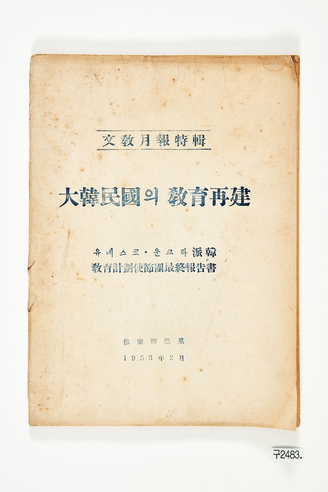
해방 이후에는 고등교육 체제의 재편과 종합대학 설립도 빠르게 진행되었다. 서울대학교의 종합화를 시작으로 경북대, 부산대, 전북대, 전남대, 해양대 등 국립종합대학이 설립되었으며, 부족한 초·중등 교원 양성을 위해 국립사범대학의 설립도 활발히 이루어졌다. 연희전문학교, 보성전문학교, 이화학당 등 민립 교육기관의 종합대학화도 진행되었다. 그러나 해방 직후 곧바로 전쟁을 겪으면서 각 대학은 교육시설을 충분히 확보하지 못했거나, 기존 시설마저 파괴되어 어려움을 겪었다. 이후 문교부와 UNKRA의 지원은 이러한 시설 재건을 뒷받침하는 중요한 기반이 되었다. 첨부한 표 1은 이러한 시대적 배경 속에서 1950년대 중후반에 건립된 일련의 대학건물들을 보여준다. 전북대 구 문리과대학은 국고 지원과 UNKRA 제공 자재를 바탕으로 건립되었다는 기록이 학교사에 남아 있고, 해양대학 역시 UNKRA 지원으로 학교 설립과 교사·캠퍼스 조성이 이루어졌다고 설명하는 자료가 남아 있어, 이 시기 대학건축과 국제 원조의 관계를 보여준다.
1957년 건립된 서울대학교 상과대학 도서관은 서울대학교가 전후 고등교육 재건의 핵심 기관 가운데 하나였다는 점을 고려할 때, 국제 원조에 기반한 교육시설 복구 및 확충의 흐름 속에서 이해될 필요가 있다. 따라서 이 건물은 단지 오래된 교사가 아니라, 전후 사회가 교육을 재건의 핵심 수단으로 인식하던 시대의 판단이 구체적 형태로 남은 물적 증거로 볼 수 있다.
표 1. UNKRA 재건계획 이후 1950년대 중후반에 건립된 대학 건물들
| 번호 | 구분 | 대상 | 준공 연도 | 설계자 | 국가등록 문화유산 | 지정 연도 | UNKRA 원조 수혜 | 이미지 |
|---|---|---|---|---|---|---|---|---|
| 1 | 국립 | 서울대 상과대학 도서관 | 1957 | 장기인 | 미지정 | – | ● | 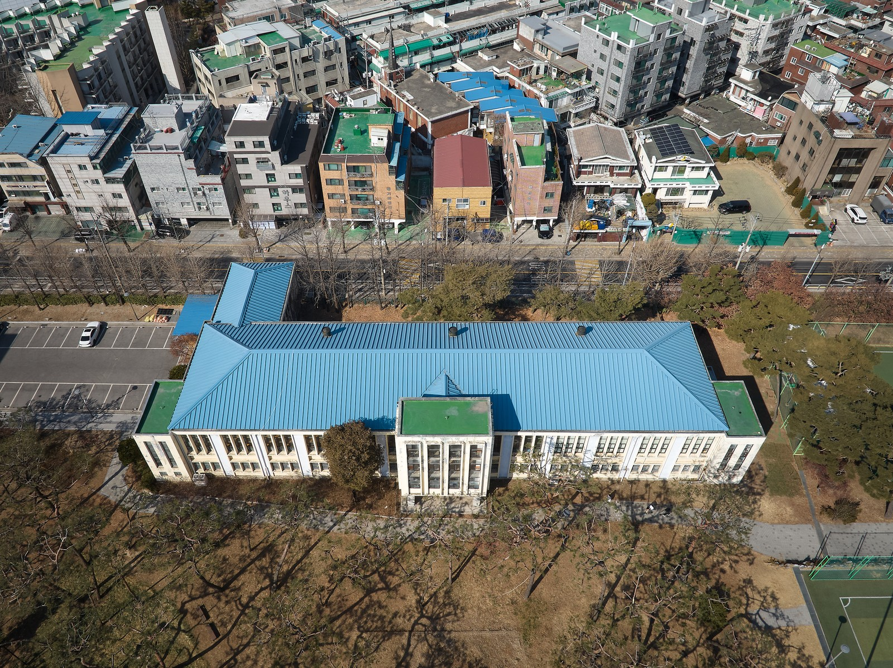 |
| 2 | 국립 | 서울대 농과대학 신관 | 1957 | 김희춘 | 미지정 | – | ● +ICA | 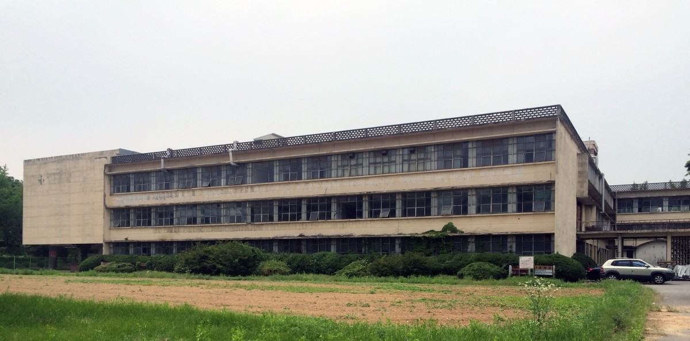 |
| 3 | 국립 | 서울대 농과대학 강당 | 1957 | 김희춘 | 미지정 | – | ● +ICA | 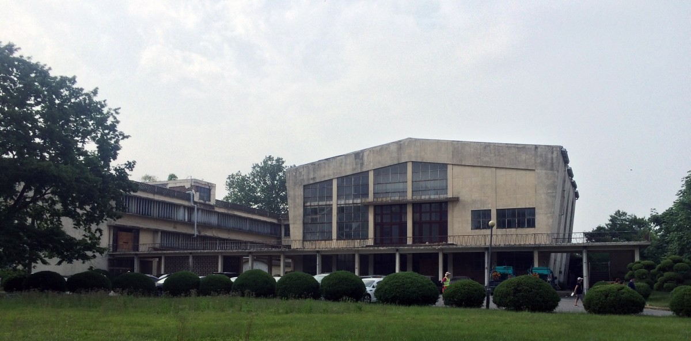 |
| 4 | 국립 | 전북대 구 본관 | 1955 | 미상 | 765호 | 2019 | ● | 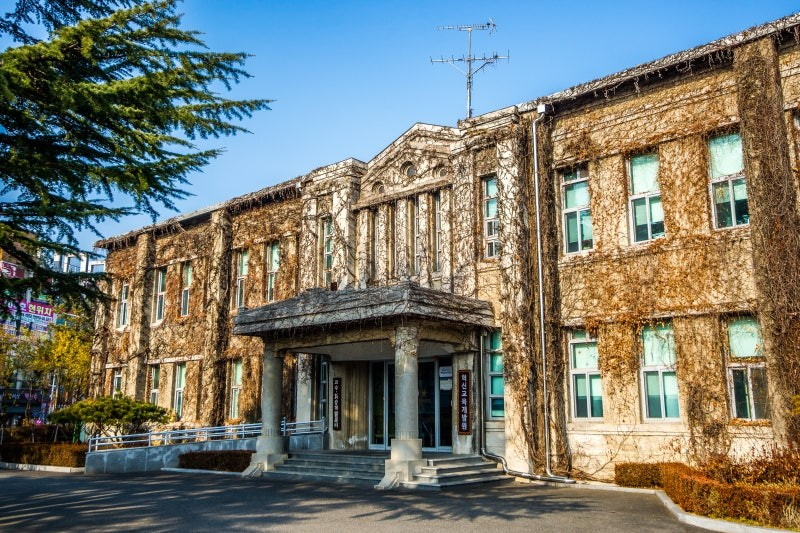 |
| 5 | 국립 | 전북대 구 문리과대학 | 1957 | 미상 | 766호 | 2019 | ● | 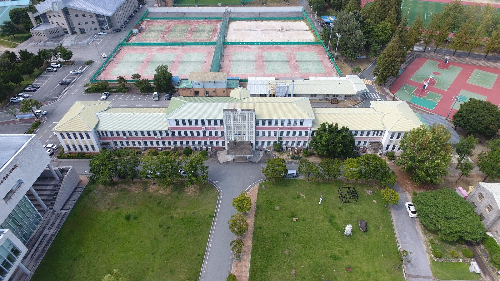 |
| 6 | 국립 | 전남대 인문대 1호관 | 1955 | 정옥진 | 96호 | 2004 | ● | 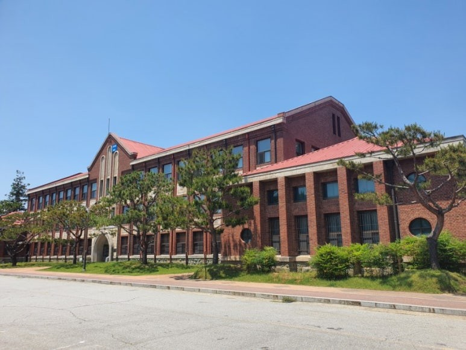 |
| 7 | 국립 | 해양대 구 본관(철거) | 1955 | 미상 | 미지정 | – | ● | 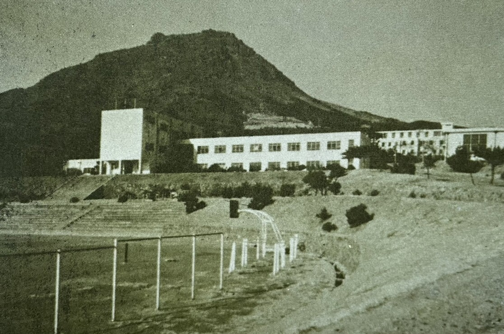 |
| 8 | 국립 | 부산대 구 본관 | 1959 | 김중업 | 641호 | 2014 | ● | 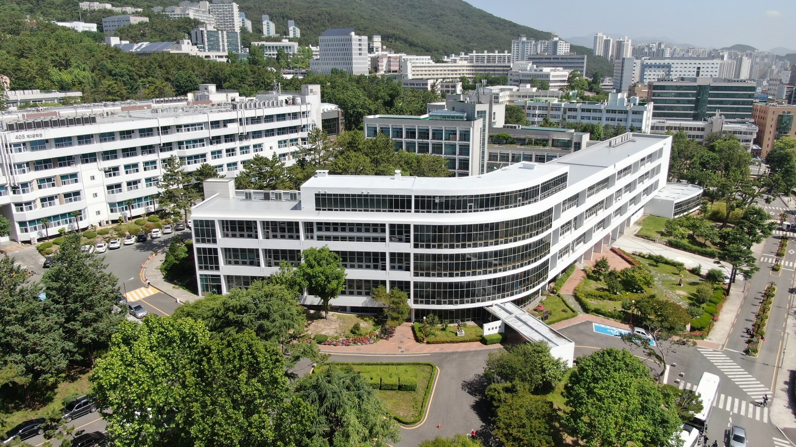 |
| 9 | 국립 | 광주사범대학 본관 (광주교육대학 교육박물관) | 1957 | 김한섭 | 644호 | 2014 | 미확인 | 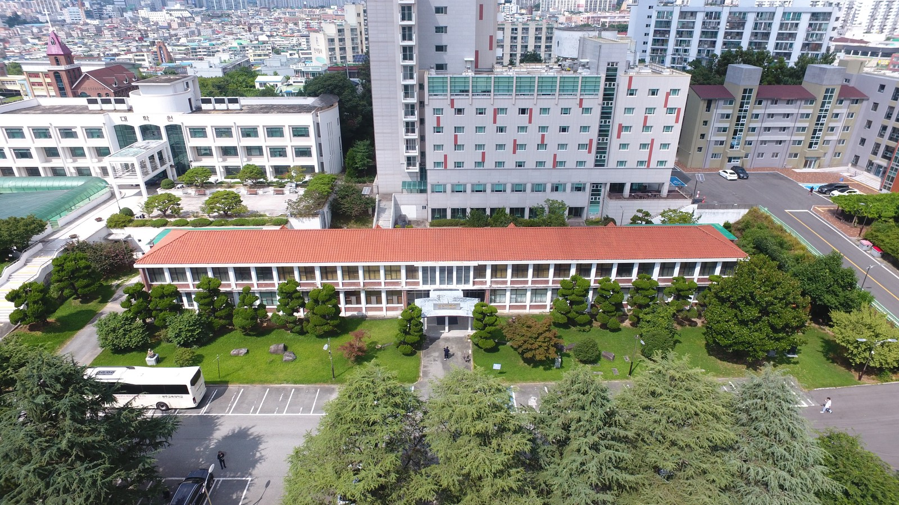 |
| 10 | 도립 | 충남대 구 문리과대학 | 1958 | 이천승 | 736호 | 2018 | 미확인 | 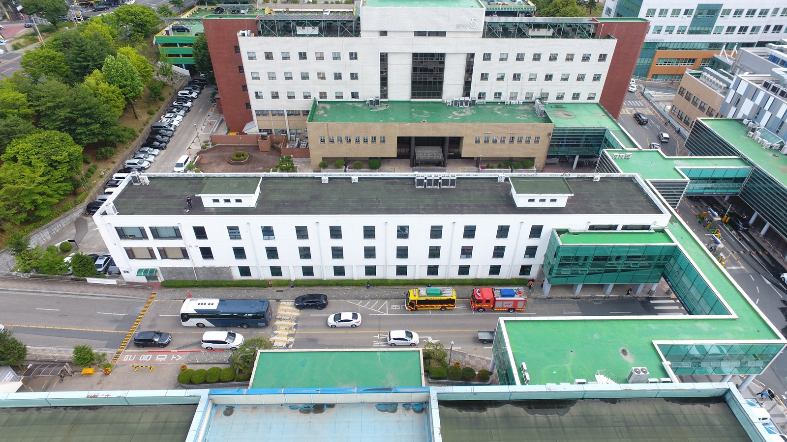 |
| 11 | 사립 | 조선대 본관 | 1954 | 김한섭 | 94호 | 2004 | 미확인 | 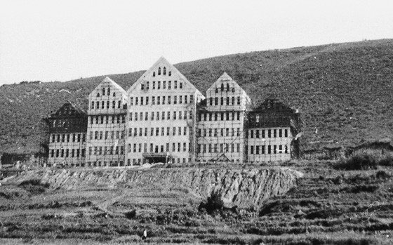 |
| 12 | 사립 | 고려대 문과대학 서관 | 1955 | 박동진 | 미지정 | – | ● | 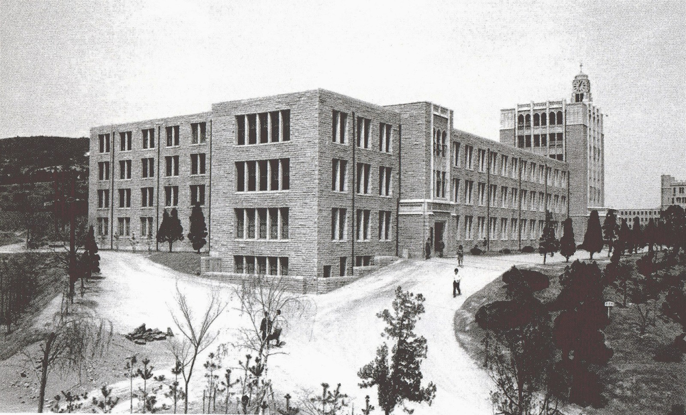 |
| 13 | 사립 | 한양대 본관 | 1956 | 박학재·장기인 | 751호 | 2019 | 미확인 | 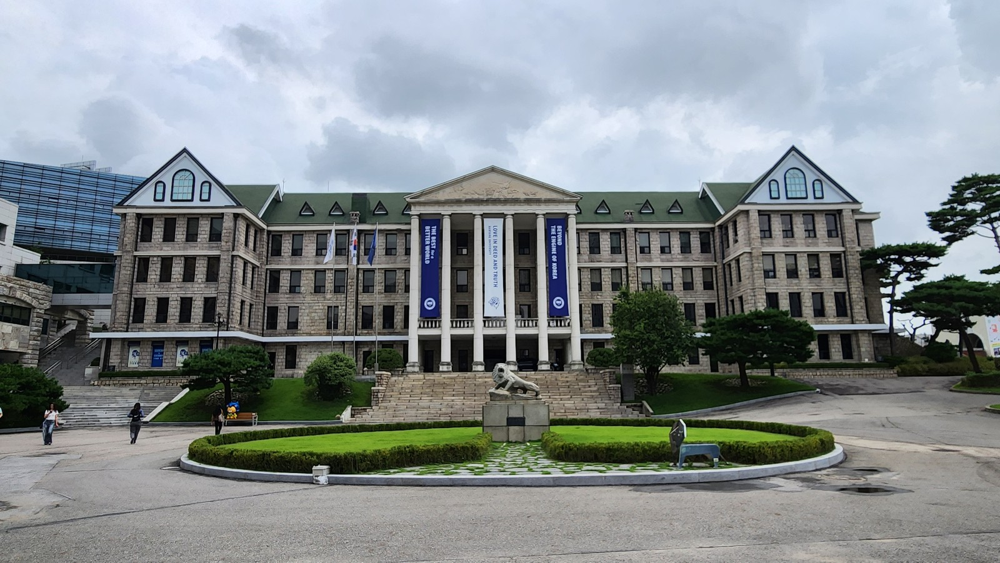 |
| 14 | 사립 | 이화여대 대강당 | 1956 | 강윤 | 미지정 | – | ● | 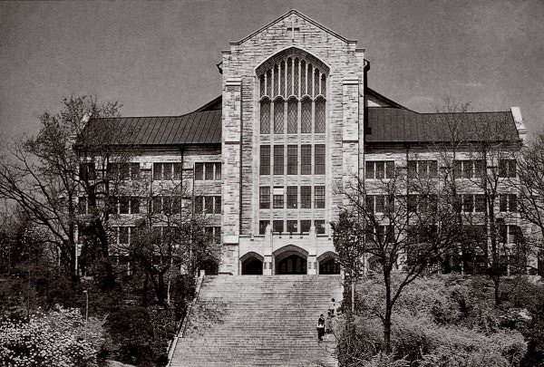 |
| 15 | 사립 | 연세대 연희관 | 1956 | 미상 | 미지정 | – | 미 제5공군 | 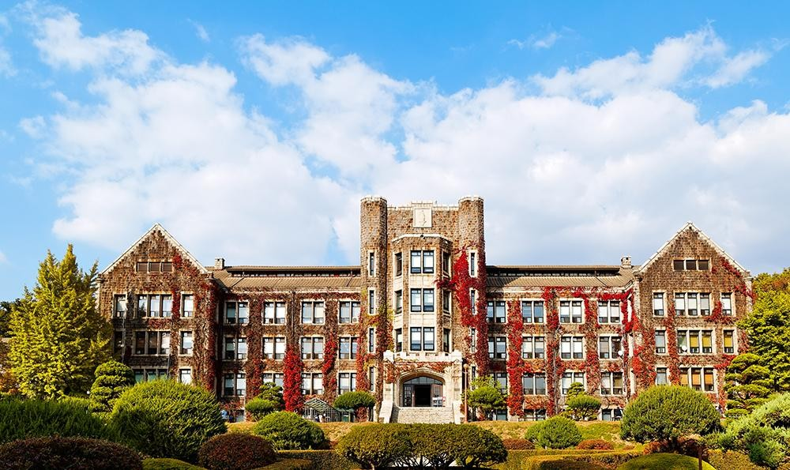 |
| 16 | 사립 | 연세대 용재관(철거) | 1957 | 김재철 | 미지정 | – | 미확인 | 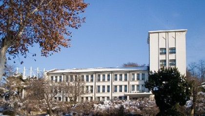 |
| 17 | 사립 | 연세대 대강당 | 1958 | 미상 | 미지정 | – | 미확인 | 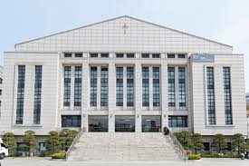 |
| 18 | 사립 | 동국대 구 본관 | 1958 | 송민구 | 735호 | 2018 | 미확인 | 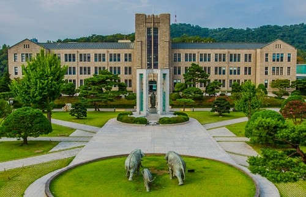 |
2건축사적 의의양식주의에서 모더니즘으로 이행하는 전환기 대학건축
1950년대 후반은 해방 이후 전문인력의 공백을 일제강점기 경성고공이나 일본의 고등공업학교, 대학에서 교육받은 소수의 건축가들이 메워가던 시기였다. 이 시기 대학 시설을 비롯한 대형 건축에 참여한 인물로는 표 1에 보이는 장기인, 송민구, 김희춘, 김중업, 박학재 등이 있다. 이들은 식민지기부터 이어진 양식 중심의 건축 이해를 완전히 버리기보다, 새로운 시대에 맞는 형태와 기능을 모색하는 방향으로 모더니즘을 점차 수용해 간 과도기 세대였다. 이러한 변화에는 전후 자원 부족 속에서 장식보다 기능과 실용을 중시할 수밖에 없었던 현실과, 해방 이후 식민지기와는 구분되는 새로운 국가의 건축적 이미지를 모색하던 시대적 요구가 함께 작용하였다. 건축가들은 기존의 문법과 새로운 흐름을 각기 다른 방식으로 조율했으며, 서울대학교 상과대학 도서관 역시 기존의 틀을 유지하면서 기능적 요소를 적극 도입한 전환기의 한 사례로 볼 수 있다.
서울대학교 상과대학 도서관은 식민지기 학교건축의 양식주의적 질서에서 완전히 벗어나지는 않으면서도, 장식을 절제하고 기능적 요소를 전면에 내세우는 방향으로 새로운 건축 언어를 모색한 사례이다. 경성제국대학 시기 건물부터 서울대학교 시기 교사(校舍)의 변화를 시대별로 비교한 표 2는 상과대학 도서관의 과도기적 위치를 잘 드러낸다. 특히 중앙 현관에만 의존하지 않는 출입 체계, 장식을 최소화한 입면, 일사 조절과 조형 효과를 함께 고려한 수직 루버의 사용(표 3)은 이 건물이 1950년대 대학건축의 전환기적 성격을 잘 드러낸다. 따라서 이 건물의 가치는 특정 양식에 속한다는 데 있기보다, 서로 다른 건축 문법이 교차하던 시기의 해법이 남아 있다는 데 있다.
표 2. 경성제국대학 예과교사, 서울대 공과대학 광산학과 교사, 서울대 상과대학 도서관, 서울대 중앙도서관의 양식적 비교
| 번호 | 교사명 | 입면 양식 | 평면 구성 |
|---|---|---|---|
| 1 | 경성제국대학 예과 교사 (1925) | 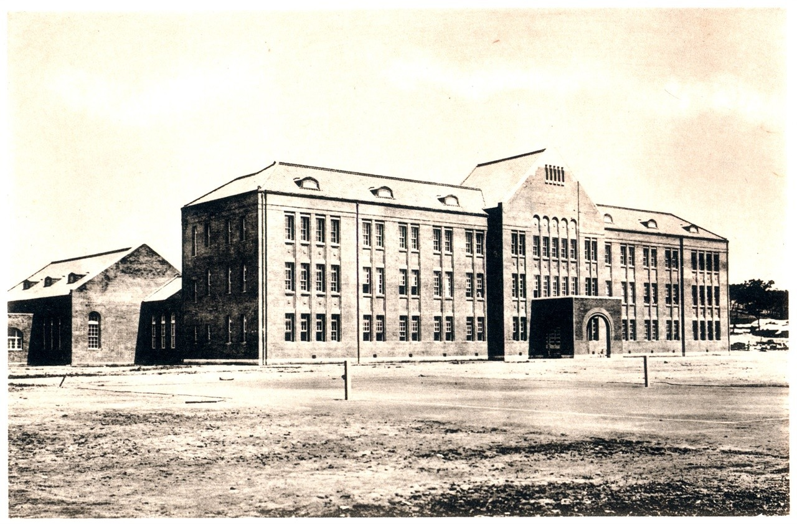 | 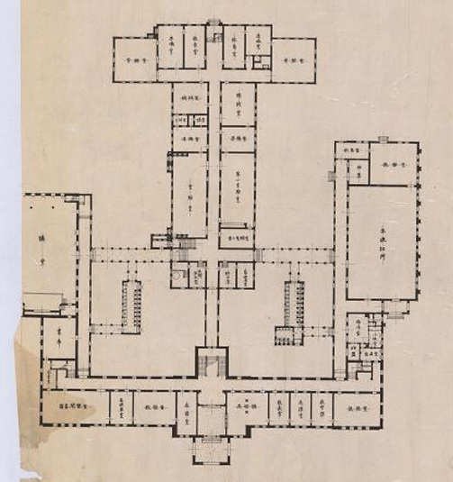 |
| 2 | 서울대학교 공과대학 광산학과 교사 (1942) | 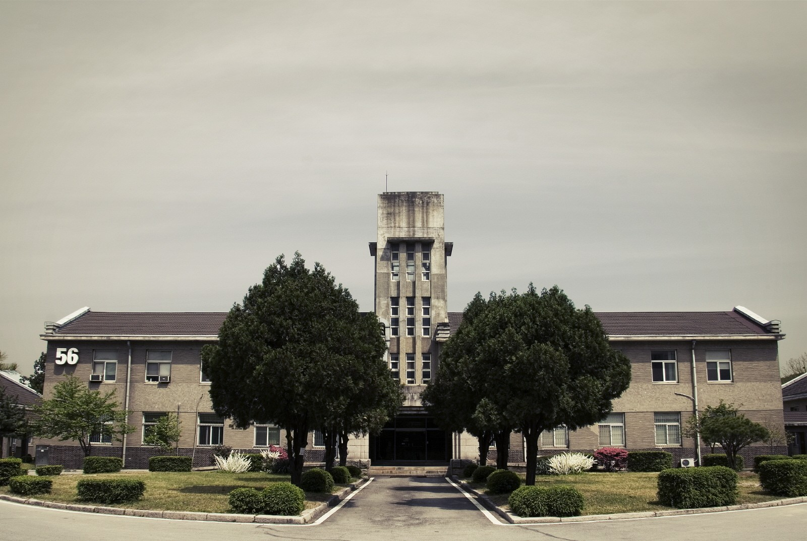 | 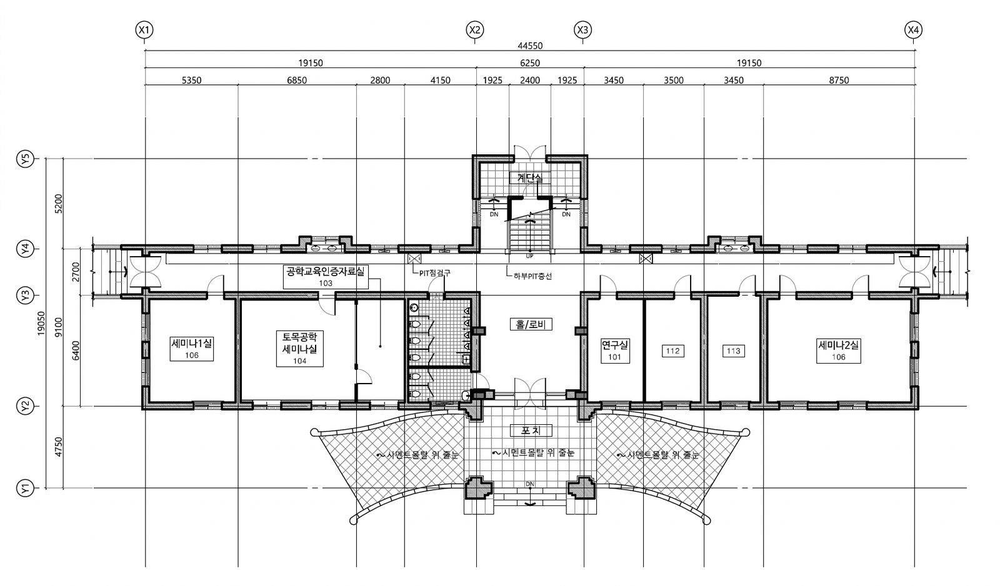 |
| 3 | 서울대학교 상과대학 도서관 (1957) | 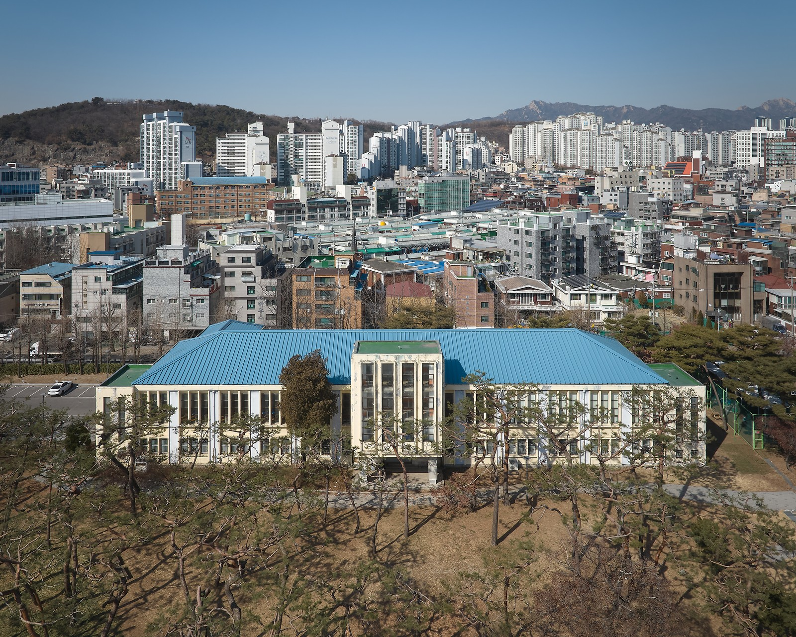 | 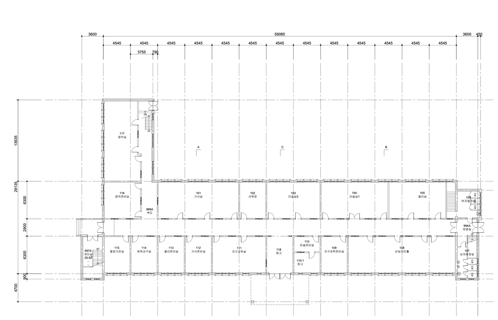 |
| 4 | 서울대학교 중앙도서관 (1975) | 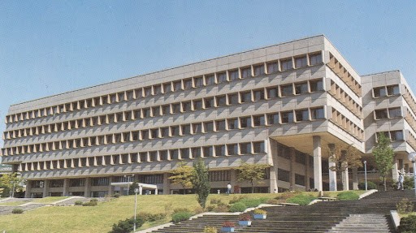 | 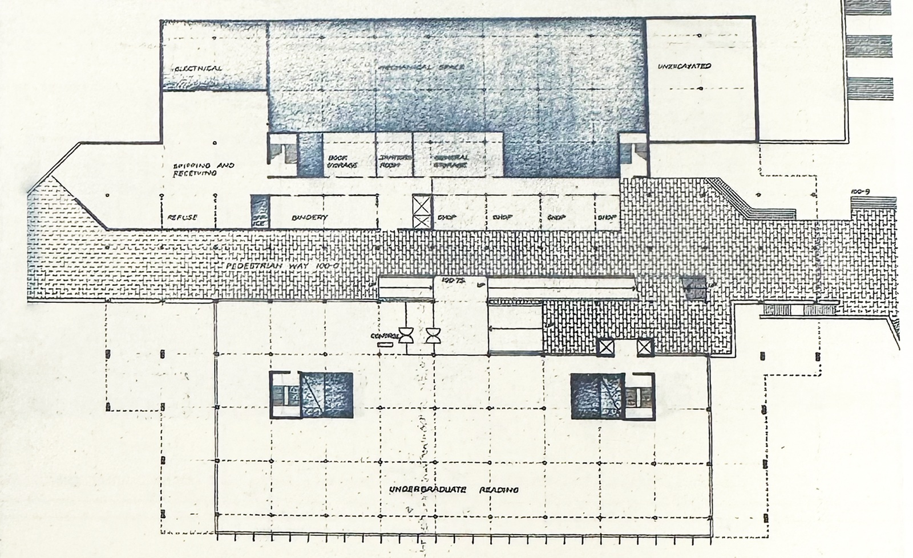 |
표 3. 서울대학교 상과대학 도서관의 양식 전환기적 요소
| 측면 출입구 오리엔테이션 | 장식을 최소화하고 기능에 충실한 입면 | 일사 조절과 조형효과를 위한 수직 루버의 사용 |
|---|---|---|
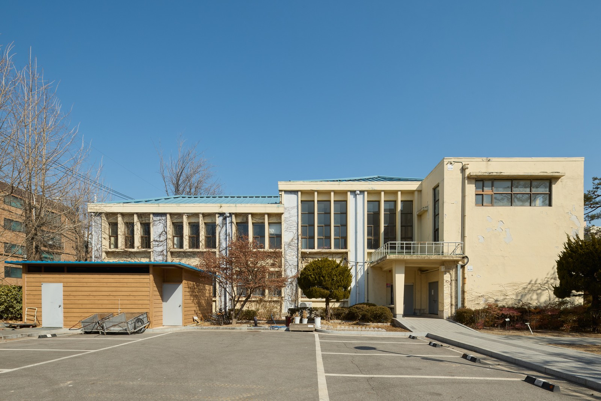 | 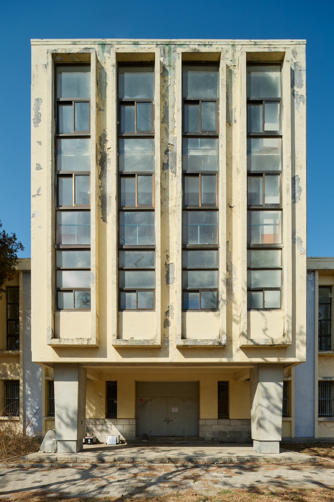 | 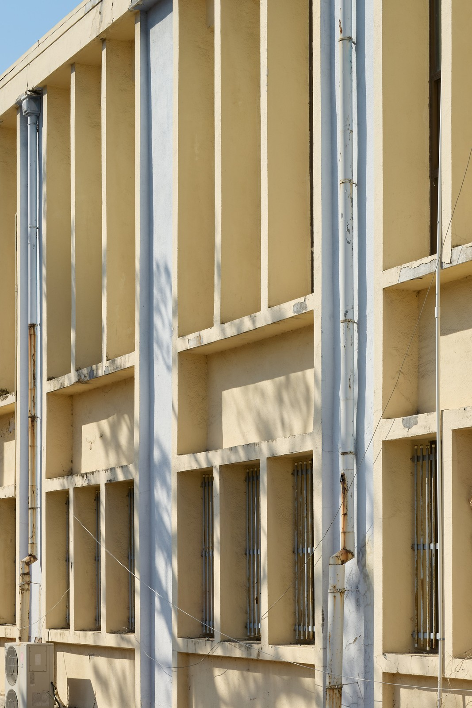 |
3교육사적 의의민주적·자기주도적 탐구 학습 환경의 도입을 보여주는 도서관 건축
교육사적으로 도서관은 전후 한국 대학이 강의실 중심의 주입식 교육에서 자료 접근과 자기주도적 탐구를 중시하는 방향으로 이동했음을 보여주는 상징적 시설이었다. 해방 이후 UNKRA의 교육 재건은 단순히 교실 수를 회복하는 데 그치지 않고, 민주 국가의 시민을 길러내기 위한 새로운 학습 환경을 마련하는 과정이기도 했다. 충분한 장서와 열람 공간을 갖춘 도서관은 이러한 변화가 가장 집약적으로 드러나는 장소였다.
특히 기존 강의동이 유지되고 있던 상황에서 별도의 도서관이 학생회관과 함께 새롭게 조성되었다는 사실은, 이 건물들이 단순한 부속시설이 아니라 교육 방식의 변화를 수용하기 위한 상징적 투자였음을 보여준다. 또한 학생들이 이 공간을 기반으로 『상대평론』과 『상대신문』 등을 만들고, 상과대학의 문화축제인 「홍릉제」를 기획하였으며, 4.19 혁명에 참여하는 등 살아 있는 지식 교류의 장을 형성했다는 점에서, 이 건물은 전후 대학 문화의 형성과도 연결되는 중요한 교육 유산이다.
표 4. 자기 주도적 학습을 지원하는 도서관
| 상과대학 도서관에서 학생들이 공부에 열중하는 모습 | 상과대학 56학번 이정호 교수의 회고 |
|---|---|
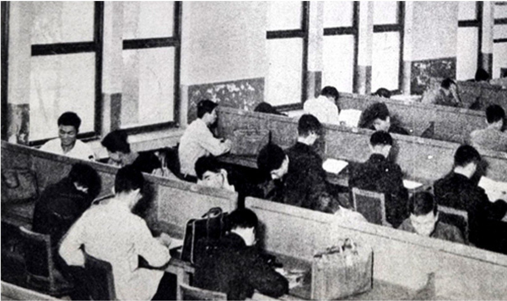 | 그러나 막상 대학에 입학한 후에 선생님께서 느끼신 실망감은 이루 말할 수 없었다고 합니다. 학생들의 교육열에 비해서 대학의 교육을 위한 준비나 여건이 거의 마련되지 않은 상태였기 때문에 학교에 의존해서만 공부할 수는 없으셨던 것입니다. 여기서 선생님은 각종의 모임을 만들어 그 모임을 통하여 자율적인 활동을 통한 보람된 대학생활을 해야겠다는 생각을 하시게 되었다고 합니다. 재학 시에 만든 모임 중 하나는 경제학 관련 원서를 읽어나가는 Big Five라는 Reading Club이었는데 이것은 대학의 강의만으로는 학생들의 학구열이 충족될 수 없었기 때문에 학생 스스로 공부해야겠다는 각오로 마련한 모임이었다고 합니다. 대학 2학년 때 출신지역이 다르고 고등학교도 다른 5분이 이 모임을 만들었다고 합니다. 처음에는 당시로서 구하기 힘들었던 Paul A. Samuelson의 Economics(3rd edition)를 구입하여 방과 후의 빈 강의실 하나를 골라 각자 맡은 Chapter를 읽고 해설하는 식으로 그 책을 읽어 나가셨습니다. 물론 이해가 되지 않는 부분도 많이 있었으나 당시 이를 해결할 수 있는 별다른 뾰족한 방법은 없으셨다고 합니다. 이런 식으로 한 권의 책을 마치면 청계천변의 값싼 막걸리 집에 가서 친구들과 당시의 비참했던 한국의 경제문제를 토론하고 울분을 터트리기도 하셨다고 합니다. 당시에 고전이라고 하는 몇 권의 책을 이 같은 방법으로 읽으셨지만 사실 그 내용을 완전히 파악하지 못하셨다고 합니다. 어떻게 공부해야 되는지를 전혀 알지 못하고 또 지도해주시는 교수님도 없이 무턱대고 공부하셨던 것입니다. 선생님께서는 당시에 그래도 대한민국의 경제문제를 양어깨에 짊어지고 나갈 서울대학교 상과대학생으로서 무엇인가 경제학에 관하여 알아야 한다는 강박관념 같은 것… |
4문화사적 의의1950년대 생활 조건과 건축적 대응의 물적 증거
이 건물은 1950년대 후반 한국 사회의 생활 조건이 건축에 어떻게 반영되었는지를 보여주는 문화사적 자료이기도 하다. 당시의 학교 건축은 오늘날과 같은 기계설비 중심의 쾌적성을 전제할 수 없었다. 전력 공급은 불안정했고, 자재 수급 또한 원활하지 않았으며, 위생과 보건 수준 역시 충분히 갖추어지지 못했다. 따라서 건축가는 제한된 여건 속에서도 가능한 한 밝고, 환기가 원활하며, 장시간 학습에 견딜 수 있는 실내 환경을 확보해야 했다.
이 건물에서 보이는 큰 창면, 깊이 조절된 개구부, 수직 루버와 같은 요소는 단지 외관을 위한 장치가 아니라 자연광을 최대한 실내로 끌어들이고 직사광과 과열을 조절하며, 제한된 설비 조건 속에서 보다 나은 학습 환경을 만들기 위한 현실적 대응으로 이해할 수 있다. 즉 이 건물은 ‘부족의 시대’가 남긴 소극적 결과물이 아니라, 자원과 기술의 제약 속에서도 더 나은 교육 공간을 만들기 위해 고안된 적극적 산물이다. 이러한 점에서 이 건물은 1950년대의 생활상과 기술적 궁리가 함께 응축된 물적 증거로서 문화사적 가치가 높다.
표 5. 서울대학교 상과대학 도서관에서 환경성능을 확보하기 위해 고안된 요소
| 큰 창면을 통한 원활한 채광과 환기 | 큰 창면이 만드는 밝은 실내 | 수직 루버에 의한 일사 조절 |
|---|---|---|
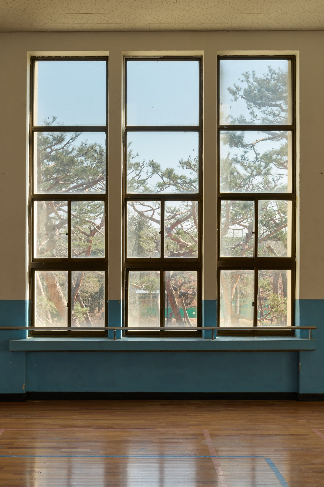 | 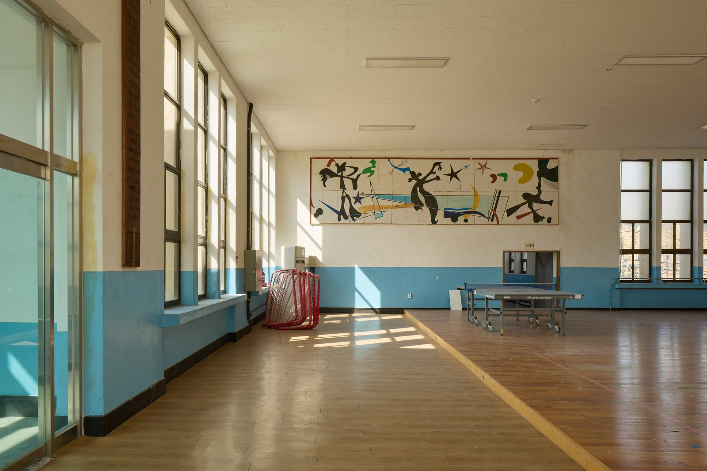 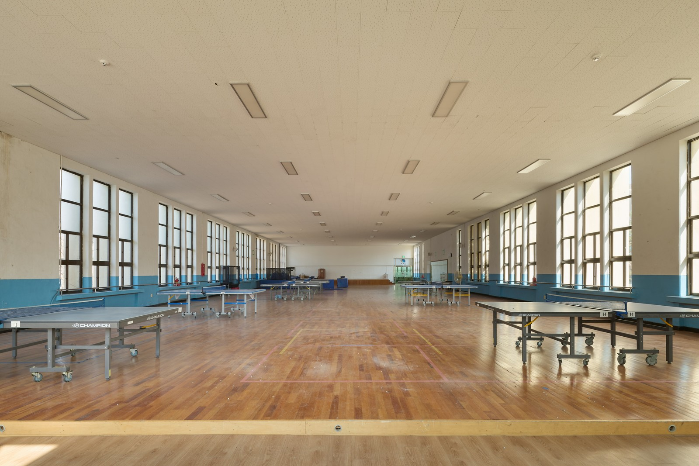 | 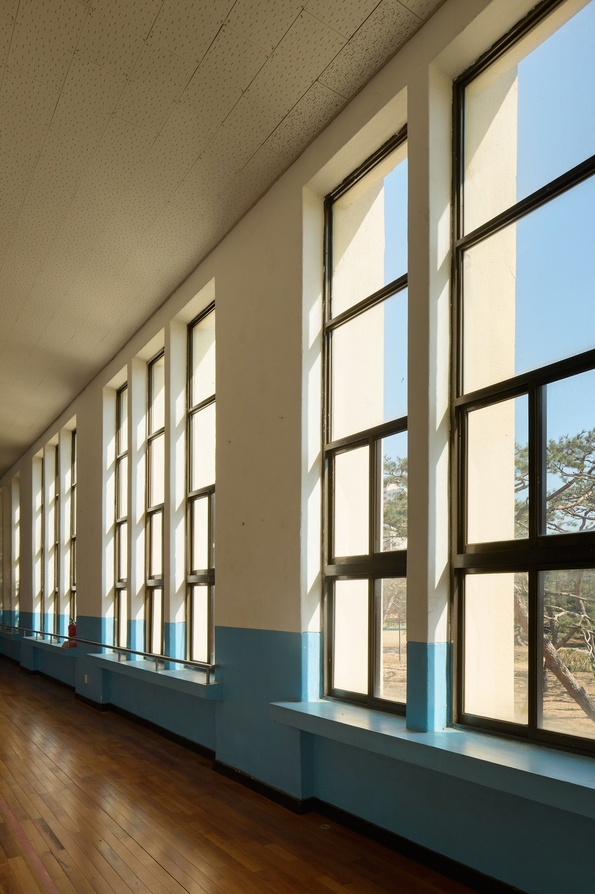 |
5장소사적 의의서울대학교와 서울사대부고의 기억을 잇는 장소
표 6. 서울대 상과대학-서울사대부고 교체에 따른 교사 구성의 변화
| 1947 서울대 상과대학 시기 | 1972 서울대 상과대학 – 서울사대부고 교체기 | 2020 서울사대부고 시기 |
|---|---|---|
| 별관 준공 이전, 상과대학 본관건물·향상림·운동장으로 구성 | 향상림 서측에 상과대학 도서관, 북측에 학생회관, 남측에 서울사대부고 구관 조성 후 모습 | 도서관을 제외한 상과대학 구 교사는 모두 철거 후, 사대부고와 사대부중 신관이 조성된 현재 모습 |
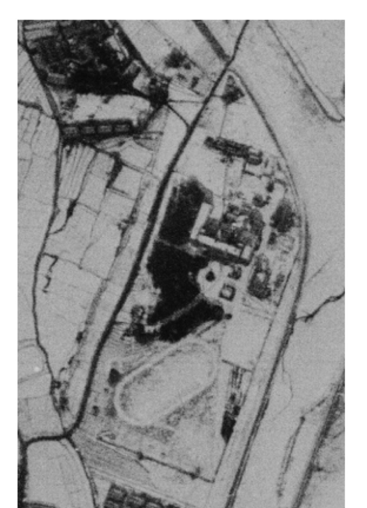 | 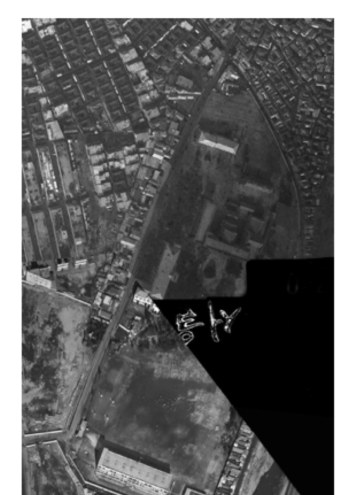 | 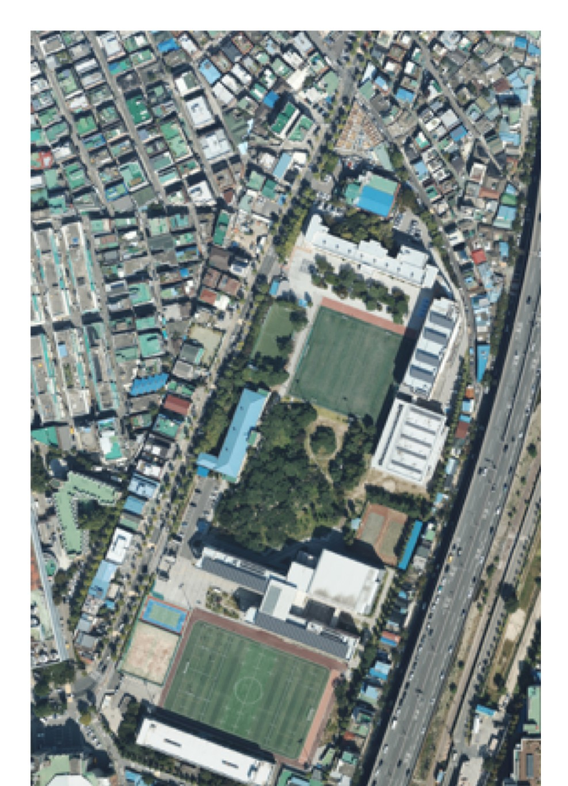 |
이 건물은 원래 서울대학교 상과대학 도서관으로 계획·건립되었으나, 이후 서울대학교의 종합화와 관악캠퍼스 이전에 따른 교사 재편 과정에서 서울대학교 사범대학 부속 중·고등학교의 별관으로 사용되면서 서로 다른 교육 공동체의 기억을 한 장소에 축적해 왔다. 따라서 이 건물의 의미는 특정 시기의 단일 기능에만 있지 않다. 대학 교육시설로 시작해 중등교육 공간으로 이어진 사용 이력은, 한 장소가 시대의 변화에 따라 기능을 달리하면서도 교육 공간으로서의 연속성을 유지해 왔음을 보여준다.
이러한 중층적 시간성은 신축 건물로 대체할 경우 다시 만들 수 없는 가치이다. 새 건물은 기능을 대체할 수는 있어도, 원래의 건립 맥락과 이후의 축적된 기억까지 함께 재현할 수는 없다. 그러므로 이 건물의 보존 여부는 단순히 노후 건물을 남길 것인가의 문제가 아니라, 학교의 역사와 정체성이 응축된 장소를 어떻게 계승할 것인가의 문제로 이해되어야 한다.
자료: <서울대학교 사범대학 부속 중고등학교 별관>의 역사적 가치 검토 의견 — 홍익대학교 건축공학부 조교수 성나연. 본 사이트는 학교 역사관 전시·교육 목적의 수록이며, 보고서의 저작권은 작성자에게 있습니다.
사진·자료 추가
별관 관련 사진·자료를 올려 함께 채워 주세요. ※ 올린 자료는 현재 사용하는 브라우저에만 저장됩니다(시범 기능).